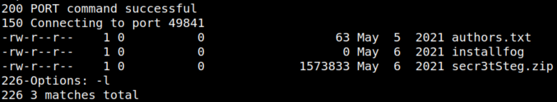
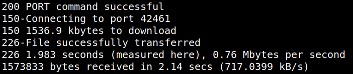
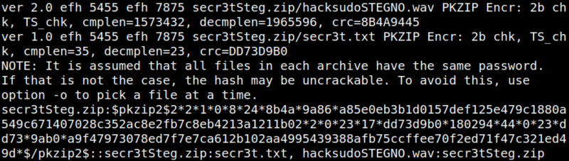
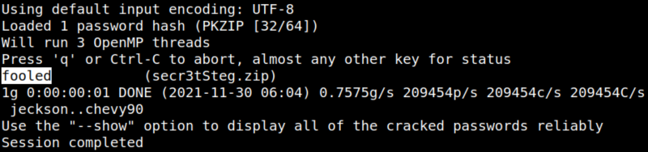
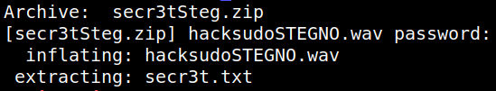

4.2.1 Download other files
There's a directory called “hacksudo_ISRO_bak”.
1. Enter to that directory and list the files.
ftp> cd hacksudo_ISRO_bak
ftp> ls
ftp> ls
Output:

2. Download the “secr3tSteg.zip” file.
ftp> get secr3tSteg.zip
Output:

It's zip file protected.
3. Crack the password using John the Ripper.
This command create a hash file.
$zip2john secr3tSteg.zip | tee hash
Output:

This command decrypt the hash.
$john hash --wordlist=/usr/share/wordlists/rockyou.txt
Output:

The password is “fooled”.
4. Unzip the “secr3tSteg.zip” file.
$unzip secr3tSteg.zip
Output:
